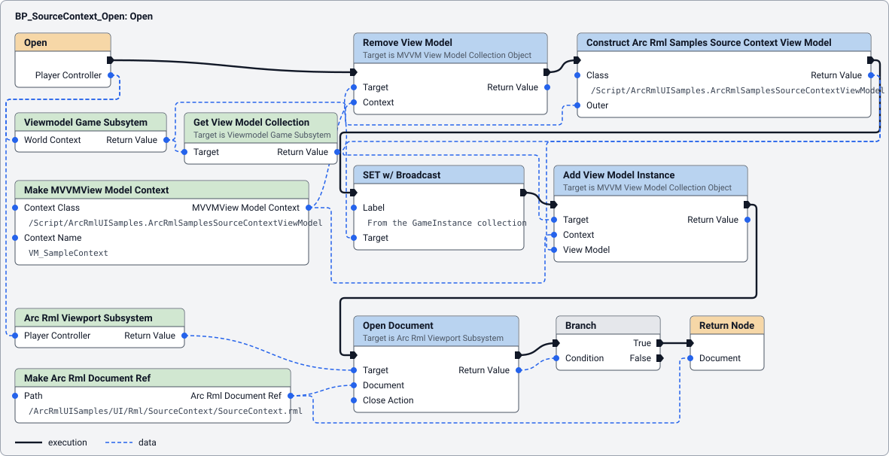
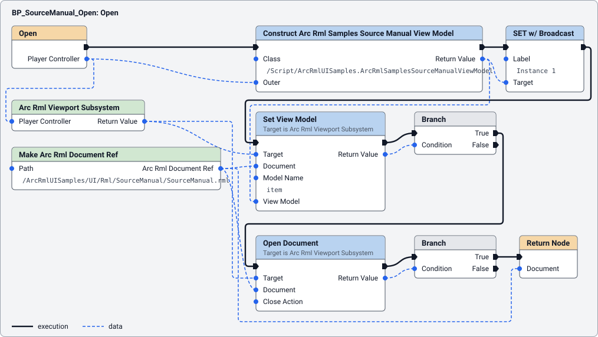

View models¶
A document reads data from Unreal MVVM view models (UMVVMViewModelBase) and calls their
functions. Use one for anything a screen shows from your game or does to it. The head declares each model with
<viewmodel> and the body reads it through data-model="<name>" (Concepts).
A declaration has a name, unique in the document, and a class, the path of a class that derives from
UMVVMViewModelBase: /Script/<Module>.<Class> for a C++ class, or the generated class ..._C of a Blueprint
(Blueprint view models). It also has exactly one source, the attribute that says where the
instance comes from:
create: the document makes the instance.context: the instance is looked up in the GameInstance's view model collection.resolver: a resolver class makes the instance.manual: game code assigns the instance.path: the instance is read from a property or getter of the player controller, its pawn or the local player.
None or two is a head error. Two more attributes are optional:
optional: without it, focus entering the document's focus areas waits for an unresolved model; with it, focus does not wait, and validation reports a problem with the model's fields as a warning instead of an error.createcannot be combined with it.settable: game code can replace the instance (Option: settable).
An attribute the declaration does not know is a warning, except on a resolver declaration, where it sets a property
of the resolver.
Only Field Notify fields are read, and the document updates when the model broadcasts a change (Data binding). Which source fits which screen is a table in Designing a game's UI.
Source: create¶
The document makes its own view model when it opens. The instance lives as long as the document's view: it is new
after the document is closed and opened again, and a keep-alive document that is only parked keeps it. create cannot
be combined with optional, and an abstract class is an error. This is the source of the FieldBinding, Events, Lists,
StructList, NestedViewModel and Component samples:
<viewmodel name="fields" class="/Script/ArcRmlUISamples.ArcRmlSamplesFieldBindingViewModel" create="true"/>
A model that holds other view models makes them in its constructor with CreateDefaultSubobject
(Data binding).
Source: context¶
The view model is looked up in the GameInstance's MVVM view model collection by its class and a context name. Game code adds the instance before it opens the document, so the document shows it from the first frame. Sample: SourceContext.
<viewmodel name="item" class="/Script/ArcRmlUISamples.ArcRmlSamplesSourceContextViewModel" context="VM_SampleContext"/>
const FArcRmlDocumentRef Document{TEXT("/ArcRmlUISamples/UI/Rml/SourceContext/SourceContext.rml")};
UMVVMGameSubsystem* Mvvm = LocalPlayer->GetGameInstance()->GetSubsystem<UMVVMGameSubsystem>();
if (!Mvvm)
{
return FArcRmlDocumentRef();
}
FMVVMViewModelContext Context;
Context.ContextClass = UArcRmlSamplesSourceContextViewModel::StaticClass();
Context.ContextName = TEXT("VM_SampleContext");
Mvvm->GetViewModelCollection()->RemoveViewModel(Context);
UArcRmlSamplesSourceContextViewModel* Instance = NewObject<UArcRmlSamplesSourceContextViewModel>(Mvvm);
Instance->Label = TEXT("From the GameInstance collection");
Mvvm->GetViewModelCollection()->AddViewModelInstance(Context, Instance);
return Viewport->OpenDocument(Document) ? Document : FArcRmlDocumentRef();
This is an excerpt from the body of the sample's Open function: LocalPlayer is its parameter and Viewport is the local player's UArcRmlViewportSubsystem, as in the Quick start.
BP_SourceContext_Open is a Blueprint Function Library. Its Open function (input PlayerController, output
Document) runs:
- Make Arc Rml Document Ref with
Path/ArcRmlUISamples/UI/Rml/SourceContext/SourceContext.rml, and Arc Rml Viewport Subsystem (in the palette: Get ArcRmlViewportSubsystem) with thePlayerControllerinput. - Viewmodel Game Subsytem (the engine's own spelling of the node title) with
WorldContextthePlayerController, then Get View Model Collection on it. - Make MVVMView Model Context with
ContextClassthe view model class andContextNameVM_SampleContext, and Remove View Model on the collection with that context. - Construct Arc Rml Samples Source Context View Model with the MVVM game subsystem as its outer, SET w/ Broadcast of
Labelon the instance, and Add View Model Instance on the collection with the context and the instance. - Open Document on the viewport subsystem; when it returns true, the function returns the document.

While the instance is not in the collection the model is unresolved. The document retries every second and when the collection changes.
Source: resolver¶
A resolver is a C++ class derived from UMVVMViewModelContextResolver that creates the instance. Every attribute of the
declaration that is not one of the declaration's own is set on the resolver property of the same name before
CreateInstance runs; a name the resolver does not have is a warning. The names name, class, context,
resolver, create, manual, path, settable, optional, preview and on-close belong to the declaration, so a
resolver property cannot have one of them. CreateInstance receives a widget owned by the local player, so a resolver
can read the player. Sample: SourceResolver; the Greeting attribute fills the resolver's Greeting property.
<viewmodel name="greeting" class="/Script/ArcRmlUISamples.ArcRmlSamplesSourceResolverViewModel" resolver="/Script/ArcRmlUISamples.ArcRmlSamplesGreetingResolver" Greeting="Hello from the RML attribute"/>
UCLASS()
class UArcRmlSamplesGreetingResolver : public UMVVMViewModelContextResolver
{
GENERATED_BODY()
public:
UPROPERTY(EditAnywhere, Category = "Samples")
FString Greeting;
virtual UObject* CreateInstance(const UClass* ExpectedType, const UUserWidget* UserWidget, const UMVVMView* View) const override;
};
UObject* UArcRmlSamplesGreetingResolver::CreateInstance(const UClass* ExpectedType, const UUserWidget* UserWidget, const UMVVMView* View) const
{
if (ExpectedType && !UArcRmlSamplesSourceResolverViewModel::StaticClass()->IsChildOf(ExpectedType))
{
return nullptr;
}
UArcRmlSamplesSourceResolverViewModel* ViewModel = NewObject<UArcRmlSamplesSourceResolverViewModel>(GetTransientPackage());
ViewModel->Greeting = Greeting;
const APlayerController* Player = UserWidget ? UserWidget->GetOwningPlayer() : nullptr;
ViewModel->PlayerName = Player ? Player->GetName() : FString(TEXT("no player"));
return ViewModel;
}
Source: manual¶
A manual declaration creates nothing: the model stays unresolved until game code assigns an object with
SetViewModel. manual implies settable and optional. Sample: SourceManual.
<viewmodel name="item" class="/Script/ArcRmlUISamples.ArcRmlSamplesSourceManualViewModel" manual="true"/>
const FArcRmlDocumentRef Document{TEXT("/ArcRmlUISamples/UI/Rml/SourceManual/SourceManual.rml")};
UArcRmlSamplesSourceManualViewModel* First = NewObject<UArcRmlSamplesSourceManualViewModel>(GetTransientPackage());
First->Label = TEXT("Instance 1");
if (!Viewport->SetViewModel(Document, TEXT("item"), First))
{
return FArcRmlDocumentRef();
}
return Viewport->OpenDocument(Document) ? Document : FArcRmlDocumentRef();
This is an excerpt from the body of the sample's Open function; Viewport is the local player's UArcRmlViewportSubsystem.
BP_SourceManual_Open is a Blueprint Function Library. Its Open function (input PlayerController, output
Document) runs:
- Make Arc Rml Document Ref with
Path/ArcRmlUISamples/UI/Rml/SourceManual/SourceManual.rml, and Arc Rml Viewport Subsystem with thePlayerControllerinput. - Construct Arc Rml Samples Source Manual View Model with the
PlayerControlleras its outer, and SET w/ Broadcast ofLabelon the instance withInstance 1. - Set View Model on the viewport subsystem with the document,
ModelNameitemand the instance. - When Set View Model returns true, Open Document; when that returns true, the function returns the document.

The document shows Waiting for the view model (its !ArcResolved branch) until the first assignment. The "Swap the
instance" button calls Swap, which makes a new view model and assigns it while the document is open:
void UArcRmlSamplesSourceManualViewModel::Swap(UObject* WorldContextObject)
{
UArcRmlViewportSubsystem* Viewport = ArcRmlSamplesSourceManualPrivate::FindViewport(WorldContextObject);
if (!Viewport)
{
return;
}
UArcRmlSamplesSourceManualViewModel* Next = NewObject<UArcRmlSamplesSourceManualViewModel>(GetTransientPackage());
Next->Generation = Generation + 1;
Next->Label = FString::Printf(TEXT("Instance %d"), Next->Generation);
Viewport->SetViewModel(FArcRmlDocumentRef{TEXT("/ArcRmlUISamples/UI/Rml/SourceManual/SourceManual.rml")}, TEXT("item"), Next);
}
Swap takes a parameter named WorldContextObject, which the call fills with the local player controller
(Events); that is how the function reaches the player's subsystem.
Source: path¶
The view model is read from an object property chain, starting at a widget the plugin creates for the player controller.
The roots are the UUserWidget getters GetOwningPlayer, GetOwningPlayerPawn and GetOwningLocalPlayer. A segment
is a Blueprint-visible object property or a const, zero-argument BlueprintCallable function that returns an object.
Each segment is looked up on the class of the live object, so a member of your own player controller or pawn class is
found without a cast. The result must be the declared class or a subclass. A path needs a player; a null on the way
leaves the model unresolved and the document evaluates the path again later. Sample: SourcePath.
<viewmodel name="item" class="/Script/ArcRmlUISamples.ArcRmlSamplesSourcePathViewModel" path="GetOwningPlayer.SampleViewModel"/>
SampleViewModel is a property of the sample's AArcRmlSamplesPlayerController, declared in ArcRmlSamplesGameMode.h and made in ArcRmlSamplesGameMode.cpp:
UPROPERTY(BlueprintReadOnly, Category = "Samples")
TObjectPtr<UArcRmlSamplesSourcePathViewModel> SampleViewModel;
SampleViewModel = CreateDefaultSubobject<UArcRmlSamplesSourcePathViewModel>(TEXT("SampleViewModel"));
The validator warns on this path
Validation reports a view-model-path warning on SampleViewModel, because it cannot see your
own controller or pawn class. The path works at run time. Any path into a member of your own class gets this warning.
A misspelled segment gets the same warning and never resolves, with no other message, so check the spelling when
you see it. An unreadable or non-object segment, and a path whose result type is unrelated to the declared class,
are view-model-path errors.
Option: settable¶
settable="true" lets game code replace the instance of a model whatever its source. In the SourceSettable sample the
first object comes from the context collection and the "Replace the instance" button swaps it:
<viewmodel name="item" class="/Script/ArcRmlUISamples.ArcRmlSamplesSourceSettableViewModel" context="VM_SampleSettable" settable="true"/>
void UArcRmlSamplesSourceSettableViewModel::Replace(UObject* WorldContextObject)
{
UArcRmlViewportSubsystem* Viewport = ArcRmlSamplesSourceSettablePrivate::FindViewport(WorldContextObject);
if (!Viewport)
{
return;
}
UArcRmlSamplesSourceSettableViewModel* Next = NewObject<UArcRmlSamplesSourceSettableViewModel>(GetTransientPackage());
Next->Generation = Generation + 1;
Next->Label = FString::Printf(TEXT("Replacement %d"), Next->Generation);
Viewport->SetViewModel(FArcRmlDocumentRef{TEXT("/ArcRmlUISamples/UI/Rml/SourceSettable/SourceSettable.rml")}, TEXT("item"), Next);
}
A model that was set by hand is skipped by the retry and by collection changes. SetViewModel with nullptr removes
the assignment and sends the model back to its own source, here the collection.
Option: on-close¶
on-close="<function>" names a function of the model that takes no arguments. The plugin calls it when the document closes
or is parked (keep-alive, Documents), once per close or park. A parked document that is later
destroyed calls nothing, and neither does a model that never resolved. In a frame, a tab's on-close also runs when a
tab switch hides that tab. Use it to release or answer something the open document held. The demo's dialog model is
manual, and Closed runs the pending callback with the cancel index when the host closes the dialog:
<viewmodel name="dialog" class="/Script/ArcRmlUIDemo.ArcRmlDemoDialogViewModel" manual on-close="Closed"/>
void UArcRmlDemoDialogViewModel::Closed()
{
if (const TFunction<void(int32)> Callback = TakeCallback())
{
Callback(CancelIndex);
}
}
The validator checks that the function exists and takes no arguments.
SetViewModel¶
SetViewModel(Document, ModelName, ViewModel) is a function of UArcRmlViewportSubsystem, in C++ and Blueprint, and
returns whether it took the object.
- It reads the head of the named document, so the document need not be open. It returns false, with a warning in the
log, for a document whose head cannot be read, a name with no
<viewmodel>, a declaration that is neithermanualnorsettable, and an object that is not of the declared class. - The assignment is kept per document. A set before
OpenDocumentshows from the first frame; a set after the open replaces the object and updates every binding. nullptrremoves the assignment and the model returns to its own source: a new instance forcreate, the property chain forpath, the collection forcontext, the resolver forresolver, unresolved formanual. On a model with no assignment it does nothing.- The assignment is kept until the document closes. A parked
keep-alivedocument keeps it. SetViewModelByClass(Document, ViewModel)sets the onemanualorsettabledeclaration of the document whose class the object is, and returns false when there are none or two.GetViewModel(Document, ModelName)returns the live object of an open document, whatever its source, and null when the document is parked or closed.
Fields every model gets¶
These names are reserved: a view model field with one of them is not bound and logs an error.
ArcResolvedis true once the view model exists. An unresolved model still binds, from the class defaults, so give the document a fallback. The sample documents show the pattern:<div data-if="ArcResolved">...</div>and<span data-if="!ArcResolved">Waiting for the view model</span>.ArcEmptyis an empty array, which a component prop with a[]default receives.ArcKeysholds key labels as text for the current input device:ArcKeys.<Action>for each action of the document'sinput-mappingcontext, by the action's asset name, andconfirm,back,navigate,stepLeft,stepRightandscheme(keyboardorgamepad). The GamepadMenu sample shows them as prompts:
<span class="gm-prompt">{{ ArcKeys.confirm }} Select</span>
<span id="gm-info" class="gm-prompt" data-hotkey="IA_Sample_MenuInfo" data-event-click="call('', 'ToggleInfo')">{{ ArcKeys.IA_Sample_MenuInfo }} Info</span>
<span class="gm-prompt">{{ ArcKeys.back }} Close</span>
These are three lines of the sample's <body>.
A document with no <viewmodel> that reads ArcKeys gets a model named ArcDocument on its <body>; it has
ArcResolved (true) and ArcKeys. Input and gamepad covers the keys.
Next¶
- Documents: the head, opening and closing.